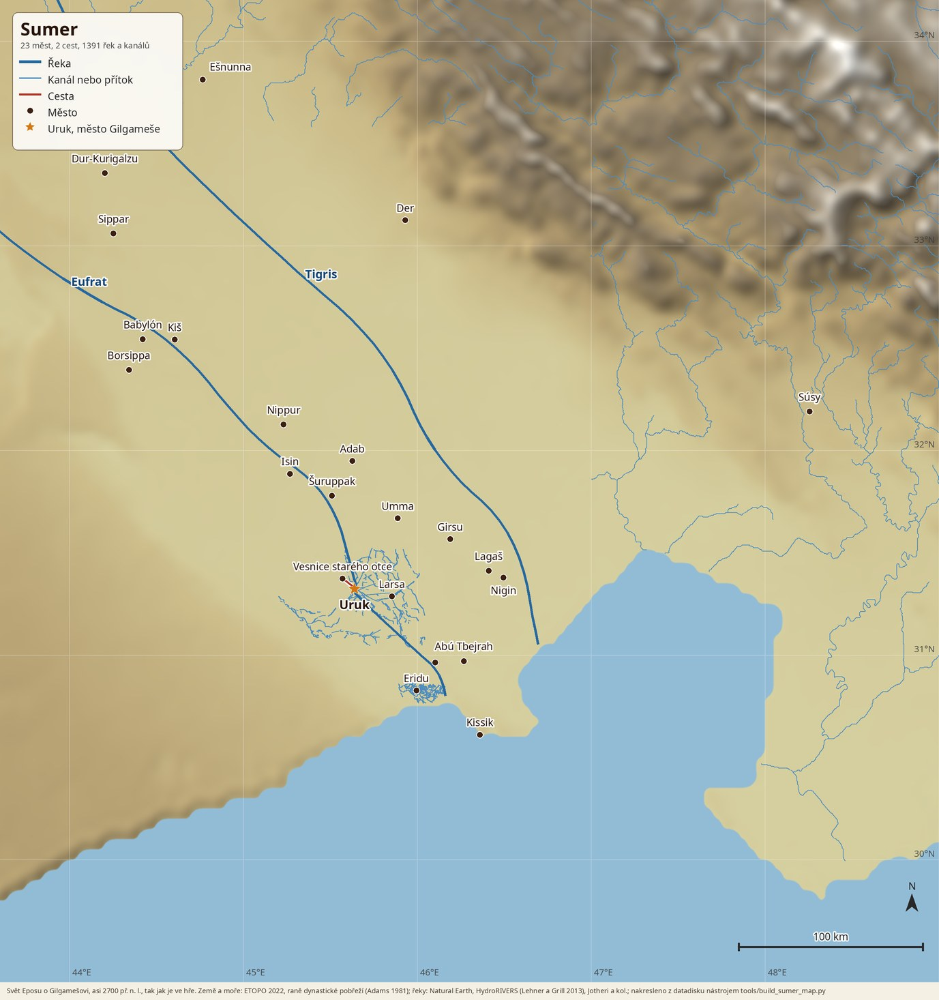

Najdi
nesmrtelnost
Takhle se tam žije
Velký trh v Uruku. Každá postava má své jméno.
Snímky z dnešní verze. Hra je v raném vývoji: nejdřív ladíme mechaniky a obsah, grafika přijde potom.
Starý otec
Smrt je napořád
Po postavě zůstane hrob s jejím majetkem. Vykrást ho může kdokoli.
Svět na tebe nečeká
Úroda roste a postava hladoví, i když nehraješ. Týden bez jídla ji zabije.
Zbytek si vyděláš
Dostaneš je jen jednou. Hra je zdarma a za peníze se tu síla koupit nedá.
Co všechno tam můžeš dělat
Nejstarší příběh na světě
Epos o Gilgamešovi, přímo ve hře, česky nebo anglicky. Postavy mluví nahlas a pamatují si, co jsi prožil.
Skutečný Sumer
Města stojí tam, kam je klade historie. Klikni si na ně.

Začneš za minutu
Klikni na Hrát hned
Hra se načte v prohlížeči na počítači. Nic neinstaluješ.
Založ si postavu
Stačí účet, jméno a vzhled. Dostaneš nářadí, jídlo a 100 zlatých.
Probuď se u napajedla
Do Uruku je to 12 km. Tady začíná tvůj první quest.
magnymph.vitexsoftware.com
Server 0.5.0 s příběhem Epos o Gilgamešovi. V síni slávy zatím vede Vitex se 110 body. Předběhni ho.
Chceš víc než hrát?
Napiš vlastní příběh bez programování, nebo spusť si vlastní svět. Kód je otevřený.
Radši si hru stáhnout?
Debian 13 nebo Ubuntu 26.04. Tohle je plně podporovaná verze.
sudo wget -O /usr/share/keyrings/vitexsoftware.gpg \ https://repo.vitexsoftware.com/KEY.gpg echo "deb [signed-by=/usr/share/keyrings/vitexsoftware.gpg] \ https://repo.vitexsoftware.com $(lsb_release -sc) main games" \ | sudo tee /etc/apt/sources.list.d/vitexsoftware.list sudo apt update && sudo apt install ishtaria-client
Doporučujeme hrát v prohlížeči. Verze pro Windows není podepsaná ani otestovaná, systém tě před ní varuje.
Stáhnout pro Windows (0.5.1)Doporučujeme hrát v prohlížeči. Verze pro macOS není podepsaná ani otestovaná, systém tě před ní varuje.
Stáhnout pro macOS (0.5.1)Hra je zdarma. Drží ji hráči.
Vzniká v malém týmu ve volném čase. Když se ti líbí, podpoř ji na Patreonu nebo o ní řekni kamarádům. Každý nový hráč pomáhá.
Co je hotové a co ještě ne
- Přežití, sběr, výroba, lov a obchod
- Stavění, farmaření, rybaření a magie
- Chat, přátelé, hroby a trvalá smrt
- Příběhy s hlasem
- Den, noc a zvířata jsou, roční období zatím ne
- Portály mezi světy jsou, přechod hráče zatím ne
- Grafika se bude ještě hodně měnit
- Přistání z vesmíru a plavba lodí
- Dovednosti, počasí a spánek v posteli
- Sdílení úspěchů na sociální sítě